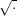

| Up | Next | Prev | PrevTail | Tail |
Computer algebra systems typically drop some degenerate cases when evaluating expressions, e.g., x∕x becomes 1 dropping the case x = 0. We claim that it is feasible in practice to compute also the degenerate cases yielding guarded expressions. We work over real closed fields but our ideas about handling guarded expression can be easily transferred to other situations. Using formulas as guards provides a powerful tool for heuristically reducing the combinatorial explosion of cases: equivalent, redundant, tautological, and contradictive cases can be detected by simplification and quantifier elimination. Our approach allows to simplify the expressions on the basis of simplification knowledge on the logical side. The method described in this paper is implemented in the REDUCE package GUARDIAN.
Authors: Andreas Dolzmann and Thomas Sturm.
It is meanwhile a well-known fact that evaluations obtained with the interactive use of computer algebra systems (CAS) are not entirely correct in general. Typically, some degenerate cases are dropped. Consider for instance the evaluation
Next consider the valid expression
Corless and Jeffrey [?] have examined the behavior of a number of CAS with such input data. They come to the conclusion that simultaneous computation of all cases is exemplary but not feasible due to the combinatorial explosion of cases to be considered. Therefore, they suggest to ignore the degenerate cases but to provide the assumptions to the user on request. We claim, in contrast, that it is in fact feasible to compute all possible cases.
Our setting is as follows: Expressions are evaluated to guarded expressions consisting of possibly several conventional expressions guarded by quantifier-free formulas. For the above examples, we would obtain
Our approach can also deal with redundant guarded expressions, such as
We use formulas over the language of ordered rings as guards. This provides powerful tools for heuristically reducing the combinatorial explosion of cases: equivalent, redundant, tautological, and contradictive cases can be detected by simplification [?] and quantifier elimination [?, ?, ?, ?, ?, ?]. In certain situations, we will allow the formulas also to contain extra functions such as  or |⋅|. Then we take care that there is no quantifier elimination applied.
Simultaneous computation of several cases concerning certain expressions being zero or not has been extensively investigated as dynamic evaluation [?, ?, ?, ?]. It has also been extended to real closed fields [?]. The idea behind the development of these methods is of a more theoretical nature than to overcome the problems with the interactive usage of CAS sketched above: one wishes to compute in algebraic (or real) extension fields of the rationals. Guarded expressions occur naturally when solving problems parametrically. Consider, e.g., the Gröbner systems used during the computation of comprehensive Gröbner bases [?].
The algorithms described in this paper are implemented in the REDUCE package GUARDIAN. It is based on the REDUCE [?, ?] package REDLOG [?, ?] implementing a formula data type with corresponding algorithms, in particular including simplification and quantifier elimination.
A guarded expression is a scheme
The first case (γ0,t0) is the generic case: t0 is the expression the system would compute without our package, and γ0 is the corresponding guard.
The guards γi need neither exclude one another, nor do we require that they form a complete case distinction. We shall, however, assume that all cases covered by a guarded expression are already covered by the generic case; in other words:
|
| (16.74) |
Consider the following evaluation of |x| to a guarded expression:
|
| (16.75) |
As an example for a non-redundant, i.e., necessary generic case we have the evaluation
of the reciprocal  :
:
In every guarded expression, the generic case is explicitly marked as either necessary or redundant. The corresponding tag is inherited during the evaluation process. Unfortunately it can happen that guarded expressions satisfy (16.75) without being tagged redundant, e.g., specialization of
With guarded expressions, the evaluation splits into two independent parts: Algebraic evaluation and a subsequent simplification of the guarded expression obtained.
In the introduction we have seen that certain operators introduce case distinctions. For this, with each operator f there is a guarding scheme associated providing information on how to map f(t1,…,tm) to a guarded expression provided that one does not have to care for the argument expressions t1, …, tm. In the easiest case, this is a rewrite rule
For functions of arbitrary arity, e.g., min or max, we formally assume infinitely many operators of the same name. Technically, we associate a procedure parameterized with the number of arguments m that generates the corresponding rewrite rule. As min_scheme(2) we obtain, e.g.,
while for higher arities there are more case distinctions necessary.For later complexity analysis, we state the concept of a guarding scheme formally: a guarding scheme for an m-ary operator f is a map
The evaluation of conventional expressions into guarded expressions is performed recursively: Constants c evaluate to
|
| (16.78) |
Then the operator f is “moved inside” the ei′ by combining all cases, technically a simultaneous Cartesian product computation of both the sets of guards and the sets of terms:
|
| (16.79) |
This leads to the intermediate result
 | (16.80) |
The new generic case is exactly the combination of the generic cases of the ei′. It is redundant if at least one of these combined cases is redundant.
Next, all non-generic cases containing at least one redundant generic constituent γi0 in their guard are deleted. The reason for this is that generic cases are only used to keep track of the system default behavior. All other cases get the status of a non-generic case even if they contain necessary generic constituents in their guard.
At this point, we apply the guarding scheme of f to all remaining expressions f(t1i1,…,tmim) in the form (16.80) yielding a nested guarded expression
|
| (16.81) |
which can be straightforwardly resolved to a guarded expression
Finally the standard evaluator of the system—reval in the case of REDUCE—is applied to all contained expressions, which completes the algebraic part of the evaluation.
The previous section was concerned with the evaluation of pure conventional expressions into guarded expressions. Our system currently combines both conventional and guarded expressions. We are thus faced with the problem of treating guarded subexpressions during evaluation.
When there is a guarded subexpression ei detected during evaluation, all contained expressions are recursively evaluated to guarded expressions yielding a nested guarded expression of the form (16.81). This is resolved as described above yielding the evaluation subresult ei′.
As a special case, this explains how guarded expressions are (re)evaluated to guarded expressions.
We describe the evaluation of the expression min(x,|x|). The first argument e1 = x evaluates recursively to
|
| (16.82) |
with a necessary generic case. The nested x inside e2 = |x| evaluates to the same form (16.82). For obtaining e2′, we apply the guarding scheme (16.76) of the absolute value to the only term of (16.82) yielding


 | (16.83) |
Our measure of complexity |G| for guarded expressions G is the number of contained cases:
As in Section 16.29.2, consider an m-ary operator f, guarded expression arguments e1′, …, em′ as in equation (16.78), and the Cartesian product T as in equation (16.79). Then

In the important special case that the guarding scheme of f is a rewrite rule f(a1,…,am) → G, the above complexity estimation simplifies to
In view of the increasing size of the guarded expressions coming into existence with subsequent computations, it is indispensable to apply simplification strategies. There are two different algorithms involved in the simplification of guarded expressions:
It is not relevant, which simplifier and which quantifier elimination procedure is actually used. We use the formula simplifier described in [?]. Our quantifier elimination uses test point methods developed by Weispfenning [?, ?, ?]. It is restricted to formulas obeying certain degree restrictions wrt. the quantified variables. As an alternative, REDLOG provides an interface to Hong’s QEPCAD quantifier elimination package [?]. Compared to the simplification, the quantifier elimination is more time consuming. It can be turned off by a switch.
The following simplification steps are applied in the given order:
Contraction of cases This is restricted to the non-generic cases of the considered guarded expression. We contract different cases containing the same terms:
Simplification of the guards The simplifier is applied to all guards replacing them by simplified equivalents. Since our simplifier maps γ ∨ γ to γ, this together with the contraction of cases takes care for the deletion of duplicate cases.
Keep one tautological case If the guard of some non-generic case becomes “T ,” we delete all other non-generic cases. Else, if quantifier elimination is turned on, we try to detect a tautology by eliminating the universal closures ∀γ of the guards γ. This quantifier elimination is also applied to the guards of generic cases. These are, in case of success, simply replaced by “T ” without deleting the case.
Remove contradictive cases A non-generic case is deleted if its guard has become “F .” If quantifier elimination is turned on, we try to detect further contradictive cases by eliminating the existential closure ∃γ for each guard γ. This quantifier elimination is also applied to generic cases. In case of success they are not deleted but their guards are replaced by “F .” Our assumption (16.74) allows then to delete all non-generic cases.
We turn back to the form (16.83) of our example min(x,|x|). Contraction of cases with subsequent simplification automatically yields
|
| (16.84) |
An output mode determines which part of the information contained in the guarded expressions is provided to the user. GUARDIAN knows the following output modes:
Matrix Output matrices in the style used throughout this paper. We have already seen that these can become very large in general.
Generic case Output only the generic case.
Generic term Output only the generic term. Thus the output is exactly the same as without the guardian package. If the condition of the generic case becomes “F ,” a warning “contradictive situation” is given. The computation can, however, be continued.
Note that output modes are restrictions concerning only the output; internally the system still computes with the complete guarded expressions.
Consider the evaluation result (16.84) of min(x,|x|). The generic term output mode would output min(x,|x|), although more precise information could be given, namely x. The problem is caused by the fact that generic cases are used to keep track of the system’s default behavior. In this section we will describe an optional smart mode with a different notion of generic case. To begin with, we show why the problem can not be overcome by a “smart output mode.”
Assume that there is an output mode which outputs x for (16.84). As the next computation involving (16.84) consider division by y. This would result in
 . Next, we
apply the absolute value once more yielding
. Next, we
apply the absolute value once more yielding
The smart mode can turn a non-generic case into a necessary generic one dropping the original generic case and all other non-generic cases. Consider, e.g., (16.84), where the conditions are equal, and the non-generic term is “simpler.”
In fact, the relevant relationship between the conditions is that the generic condition implies the non-generic one. In other words: Some non-generic condition is not more restrictive than the generic condition, and thus covers the whole domain of the guarded expression. Note that from the implication and (16.74) we may conclude that the cases are even equivalent.
Implication is heuristically checked by simplification. If this fails, quantifier elimination provides a decision procedure. Note that our test point methods are incomplete in this regard due to the degree restrictions. Also it cannot be applied straightforwardly to guards containing operators that do not belong to the language of ordered rings.
Whenever we happen to detect a relevant implication, we actually turn the corresponding non-generic case into the generic one. From our motivation of non-generic cases, we may expect that non-generic expressions are generally more convenient than generic ones.
We give the results for the following computations as they are printed in the output mode matrix providing the full information on the computation result. The reader can derive himself what the output in the mode generic case or generic term would be.
The evaluation time for the last example is 119 ms on a SUN SPARC-4. This illustrates that efficiency is no problem with such interactive examples.
This section describes possible extensions of the GUARDIAN. The extensions proposed in Section 16.29.4 on simplification of terms and Section 16.29.4 on a background theory are clear from a theoretical point of view but not yet implemented. Section 16.29.4 collects some ideas on the application of our ideas to the REDUCE integrator. In this field, there is some more theoretical work necessary.
Consider the expression sign(x)x -|x|. It evaluates to the following guarded expression:
Generally, one would proceed as follows: If the guard is a conjunction containing as toplevel equations
A more general approach would reduce the expression modulo a Gröbner basis of all the t1, …, tk. This leads, however, to larger expressions in general.
One can also imagine to make use of non-conjunctive guards in the following way:
According to experiences with similar ideas in the “Gröbner simplifier” described in [?], this should work well.
In practice one often computes with quantities guaranteed to lie in a certain range. For instance, when computing an electrical resistance, one knows in advance that it will not be negative. For such cases one would like to have some facility to provide external information to the system. This can then be used to reduce the complexity of the guarded expressions.
One would provide a function assert(φ), which asserts the formula φ to hold. Successive applications of assert establish a background theory, which is a set of formulas considered conjunctively. The information contained in the background theory can be used with the guarded expression computation. The user must, however, not rely on all the background information to be actually used.
Technically, denote by Φ the (conjunctive) background theory. For the simplification of the guards, we can make use of the fact that our simplifier is designed to simplify wrt. a theory, cf. [?]. For proving that some guard γ is tautological, we try to prove

Independently, one can imagine to use a background theory for reducing the output with the matrix output mode. For this, one simplifies each guard wrt. the theory at the output stage treating contradictions and tautologies appropriately. Using the theory for replacing all cases by one at output stage in a smart mode manner leads once more to the problem of expressions or even guarded expressions “mysteriously” getting more complicated. Applying the theory only at the output stage makes it possible to implement a procedure unassert(φ) in a reasonable way.
CAS integrators make “mistakes” similar to those we have examined. Consider, e.g., the typical result
Within the framework of this paper, we would have to associate a guarding scheme to the integrator int. It is not hard to see that this cannot be done in a reasonable way without putting as much knowledge into the scheme as into the integrator itself. Thus for treating integration, one has to modify the integrator to provide guarded expressions.
Next, we have to clarify what the guarded expression for the above integral would look like. Since we know that the integral is defined for all interpretations of the variables, our assumption (16.74) implies that the generic condition be “T .” We obtain the guarded expression
Our method, in the described form, uses an already implemented algebraic evaluator. In the previous section, we have seen that this point of view is not sufficient for treating integration appropriately.
Also our approach runs into trouble with built-in knowledge such as
Equation (16.85) introduces an absolute value operator within a non-generic term without making a case distinction. Equation (16.86) is wrong when not considering x transcendental. In contrast to the situation with reciprocals, our technique cannot be used to avoid this “mistake.” We obtainWe have already seen in the example Section 16.29.3 that the implementation of knowledge such as (16.85) and (16.86) is usually quite ad hoc, and can be mostly covered by using guarded expressions. This obesrvation gives rise to the following question: When designing a new CAS based on guarded expressions, how should the knowledge be distributed between the algebraic side and the logic side?
Guarded expressions can be used to overcome well-known problems with interpreting expressions as terms. We have explained in detail how to compute with guarded expressions including several simplification techniques. Moreover we gain algebraic simplification power from the logical simplifications. Numerous examples illustrate the power of our simplification methods. The largest part of our ideas is efficiently implemented, and the software is published. The outlook on background theories and on the treatment of integration by guarded expressions points on interesting future extensions.
[1] Bradford, R. Algebraic simplification of multiple valued functions. In Design and Implementation of Symbolic Computation Systems (1992), J. Fitch, Ed., vol. 721 of Lecture Notes in Computer Science, Springer-Verlag, pp. 13–21. Proceedings of the DISCO 92.
[2] Broadberry, P., Gómez-Díaz, T., and Watt, S. On the implementation of dynamic evaluation. In Proceedings of the International Symposium on Symbolic and Algebraic Manipulation (ISSAC 95) (New York, N.Y., 1995), A. Levelt, Ed., ACM Press, pp. 77–89.
[3] Collins, G. E. Quantifier elimination for the elementary theory of real closed fields by cylindrical algebraic decomposition. In Automata Theory and Formal Languages. 2nd GI Conference (Berlin, Heidelberg, New York, May 1975), H. Brakhage, Ed., vol. 33 of Lecture Notes in Computer Science, Gesellschaft für Informatik, Springer-Verlag, pp. 134–183.
[4] Corless, R. M., and Jeffrey, D. J. Well …it isn’t quite that simple. ACM SIGSAM Bulletin 26, 3 (Aug. 1992), 2–6. Feature.
[5] Davenport, J. H., and Faure, C. The “unknown” in computer algebra. Programmirovanie 1, 1 (1994).
[6] Dolzmann, A., and Sturm, T. Simplification of quantifier-free formulas over ordered fields. Technical Report MIP-9517, FMI, Universität Passau, D-94030 Passau, Germany, Oct. 1995. To appear in the Journal of Symbolic Computation.
[7] Dolzmann, A., and Sturm, T. Redlog—computer algebra meets computer logic. Technical Report MIP-9603, FMI, Universität Passau, D-94030 Passau, Germany, Feb. 1996.
[8] Dolzmann, A., and Sturm, T. Redlog user manual. Technical Report MIP-9616, FMI, Universität Passau, D-94030 Passau, Germany, Oct. 1996. Edition 1.0 for Version 1.0.
[9] Duval, D., and Gonzáles-Vega, L. Dynamic evaluation and real closure. In Proceedings of the IMACS Symposium on Symbolic Computation (1993).
[10] Duval, D., and Reynaud, J.-C. Sketches and computation I: Basic definitions and static evaluation. Mathematical Structures in Computer Science 4, 2 (1994), 185–238.
[11] Duval, D., and Reynaud, J.-C. Sketches and computation II: Dynamic evaluation and applications. Mathematical Structures in Computer Science 4, 2 (1994), 239–271.
[12] Gómez-Díaz, T. Examples of using dynamic constructible closure. In Proceedings of the IMACS Symposium on Symbolic Computation (1993).
[13] Hearn, A. C., and Fitch, J. P. Reduce User’s Manual for Version 3.6. RAND, Santa Monica, CA 90407-2138, July 1995. RAND Publication CP78.
[14] Hong, H., Collins, G. E., Johnson, J. R., and Encarnacion, M. J. QEPCAD interactive version 12. Kindly communicated to us by Hoon Hong, Sept. 1993.
[15] Loos, R., and Weispfenning, V. Applying linear quantifier elimination. The Computer Journal 36, 5 (1993), 450–462. Special issue on computational quantifier elimination.
[16] Melenk, H. Reduce symbolic mode primer. In REDUCE 3.6 User’s Guide for UNIX. Konrad-Zuse-Institut, Berlin, 1995.
[17] Tarski, A. A decision method for elementary algebra and geometry. Tech. rep., University of California, 1948. Second edn., rev. 1951.
[18] Weispfenning, V. The complexity of linear problems in fields. Journal of Symbolic Computation 5, 1 (Feb. 1988), 3–27.
[19] Weispfenning, V. Comprehensive Gröbner bases. Journal of Symbolic Computation 14 (July 1992), 1–29.
[20] Weispfenning, V. Quantifier elimination for real algebra—the cubic case. In Proceedings of the International Symposium on Symbolic and Algebraic Computation in Oxford (New York, July 1994), ACM Press, pp. 258–263.
[21] Weispfenning, V. Quantifier elimination for real algebra—the quadratic case and beyond. To appear in AAECC.
| Up | Next | Prev | PrevTail | Front |
![[ ]
a1- a ⁄= 0 |a1
a2 → 2 |a2
√a--- → [ a ≥ 0 |√a--- ]
1 ⌊ 1 | 1 ⌋
T |sign (a1)
|| a1 > 0 | 1 ||
sign(a1) → ⌈ a1 = 0 | 0 ⌉
a1 < 0 | - 1
⌊ | ⌋
T ||a1|
|a1| → ⌈ a1 ≥ 0 | a1 ⌉ (16.76)
a1 < 0 |- a1](manual281x.png)